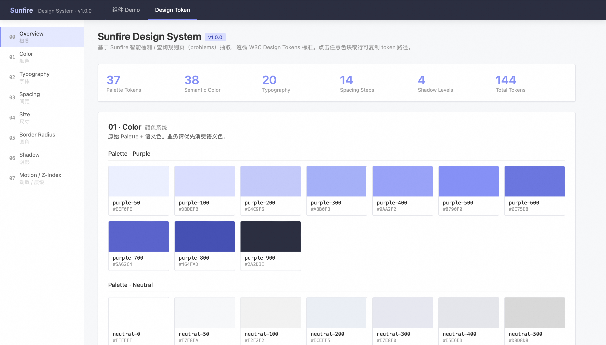
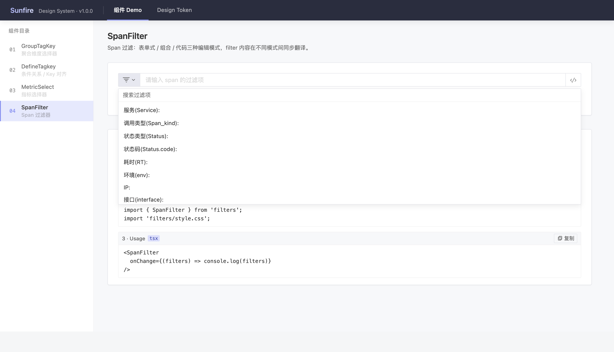
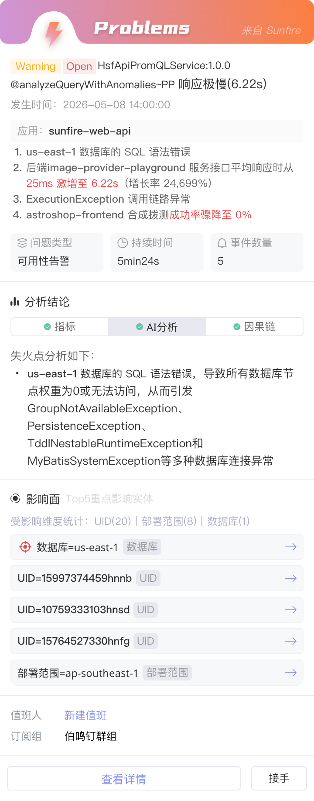
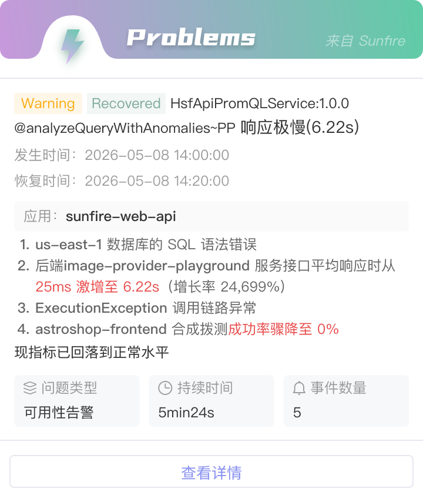

平台
Sunfire 是一个企业级监控平台，与 Datadog 同类型。覆盖 Monitor、APM、指标、Trace、拓扑、日志、大盘、Event、Problems 等核心模块。
服务 37 个租户，20,000+ 应用。租户横跨不同业务的产品线，用户角色包含应用开发工程师和运维 / SRE 两类。
我担任 Sunfire 的 Design Owner 已近 4 年，负责平台的全量设计——从顶层信息架构到模块交互细节。
信息架构
三视角 · 工具层 · 顶部导航
核心判断：信息架构从领域事实推导。
三视角对应观测的三种基本对象——应用、业务、个人。工具层对应能力本身。顶部导航对应跨视角、跨场景的查找与切换需求。
判断 —— 基于 11 条用户访谈、JTBD 任务拆解。
菜单 —— 基于真实埋点数据，结合 Datadog 菜单职能与核心场景流程的对比。
最终推导结构 —— 顶部全局导航 + 左侧菜单（三视角 + 工具层）。

「我的」承载的不是“个性化推荐”，而是用户“找东西”的需求——关注内容是场景依赖的，不是一份固定清单。这一判断重新定义了「我的」视角的功能边界——同时也让原本独立的「工作台」菜单不再需要存在，相关能力收敛进「我的」（详见下一章）。
顶部导航不归属于任何视角，但用户在任何场景下都可能需要：跨相关平台的菜单切换、全局搜索、常用功能、最近、收藏。这些能力收敛在顶部，让用户能跨视角、跨场景地快速到达目标。

「我的」工作台
关注 = 主动管理的资产 + 当下场景需要的对象

核心判断：用户的关注内容是依赖场景的，不是固定清单。
升级后的「我的」重新梳理整合了原「工作台」菜单的能力——旧版「我的」只承载用户的个人资产（预警规则、监控项、应用、大盘等），旧版「工作台」承载关注的报警事件、公告、功能入口等。新版「我的」把两者合并为一个完整的个人视角。
页面聚合四类信息：用户的资产管理、报警事件、最近访问、平台公告。资产模块按“资产类型 × 用户关系”二维结构组织，告警类内容置顶。
Monitor 重构
类型统一 · 配置流程的简化
核心判断：Monitor 重构的首要动作是类型统一——原本 12 种监控项类型合并为一个「通用监控项」。统一之后，原本不同类型各自的配置流程需要被新结构承接，并在此基础上做进一步的简化。
类型统一
原本平台里有 12 种独立的监控项类型——分钟级 / 秒级 × 无 key / 多 key、常用服务指标、多指标监控、统计 Top、归档统计、关键字监控等。每种都有自己的配置入口、字段、流程；用户在开始配置之前，必须先对这 12 种类型建立认知，才能做出选择。新方案把这些类型在信息架构层合并为「通用监控项」：一个监控项里可以建任何类型的指标，也可以同时建多种类型指标——既消除了类型认知负担，也释放了监控项的配置能力。（底层的指标定义与采集能力是平台既有能力；本次重构的设计对象是类型的信息架构统一与配置流程的重新组织，而非指标引擎本身。）
上线后 · 采用与验证
通用监控项作为统一入口上线，12 种旧类型入口并未下线、保持同等可见，用户配置时可自由选择。上线后通用类型已有真实使用；但在创建侧，目前多数新建监控项仍从旧类型入口进入——旧入口未下线、存量资产持续被使用、老用户存在路径依赖，通用类型的采用仍处早期。
这并不动摇类型统一的设计依据——它来自领域事实：用户配置时真正要回答的是“监控什么数据”，而不是“选哪种类型”，前置的类型区分本身就是设计强加的认知负担；这个判断的成立与否，取决于用户任务的结构，而非采用得多快。
采用进度本身，现有埋点还回答不了：它记录的是监控项的访问量，而非“配置时是否选择通用”。要真正验证类型统一的采用，需要在配置入口补埋类型选择行为——这是已识别的下一步。
步数缩短
通用编辑面板替代了原本相同操作的重复弹窗。在此基础上，对原监控项类型里 TOP 6 的类型分别做了步数测算——旧版 11-14 步（部分步骤随配置数量重复），新方案收敛到 5-6 步。
口径说明：这是基于配置流程的设计测算（逐步拆解两版流程的操作步骤），不是线上实测的耗时或错误率数据。


流程解耦
原本监控项和规则是绑死的，规则只能用监控项中的指标，无法跨监控项选指标。且监控项类型在统一之前被切分得很细，规则的可配置范围就进一步被限制。
新方案把两者解耦：规则可以选任何监控项的指标来组合条件，组合的自由度和可能性都大幅扩大。这让规则能承接更复杂的业务场景，也支持用户配出更自定义化的预警规则。
跨模块的组件统一
识别共性 → 专用组件
示例：Filters 查询

示例：指标选择

核心判断：识别跨模块的共性，统一为专用组件。
平台里有些操作模式天然跨模块——查找指标、组合 filter、选择时间范围、选择应用——它们在不同模块出现时承担的是同一种交互。把这些跨模块共性识别出来，统一为这个领域的专用组件，让它们在不同模块里保持一致的样式和操作逻辑。
其中 Filters 组件作为 Sunfire 跨模块复用最高的核心组件，其设计抽象详见末尾的「延伸阅读 · Filters」。
沉淀为 Design System
识别共性、统一为专用组件，如果只停在“每次设计时记得保持一致”，一致性就依赖设计者的自觉。要让它成为系统层的约束，需要把这些判断沉淀成可被消费的规范。我独立搭建了 Sunfire Design System，并借助 AI 把平台既有的视觉规则结构化为 design token。

Token 分两层：原始 Palette 与语义色。业务侧优先消费语义色——这样换肤、主题调整、语义调色都只需改中间层，不必回头动每个消费点。这是把“一致性”从设计约定变成结构约束。

组件库首批收录的四个组件——GroupTagKey、DefineTagKey、MetricSelect、SpanFilter——都不是通用控件，而是本章讲的那些“跨模块共性”的直接产物：聚合维度、条件关系、指标选择、Span 过滤。它们是可观测领域的专用组件，也正是识别共性这套判断落到工程侧的形态。
边界与现状
当前是 v1.0.0。这 144 个 token 编码的是 Sunfire 全平台通用的视觉语言，首批从 problems 模块抽取落库；全平台 token 的抽取仍在进行中。组件同理——平台里已统一的专用组件不止这四个，收录进 DS 的工作与 token 抽取同步推进。
token 化的组织方式，是朝 Design-to-Code 方向做的结构准备，为未来与前端工程的对接预留了基础——能否直接落地 D2C 仍取决于具体技术栈，是下一步要验证的方向。
Filters
三种形态，共享一份过滤逻辑
Filters 是 Sunfire 跨模块复用最高的核心组件之一。它支持三种交互形态——代码、选择框、表单——每种形态对应不同的输入方式，但共享同一份过滤逻辑、可实时互转（多形态互转已在 Trace、Metric Explorer、规则配置、Event 等模块上线）。
这套抽象不是一次设计出来的，而是 Sunfire 中后期沉淀的结果。
演进 · 从场景适配到用户习惯适配
早期做拓扑、规则配置等模块时，Filters 是按场景各自实现的——拓扑里用选择框，规则配置里用表单。每个模块都为自己的场景选了“最合适”的形态。
但“场景决定形态”只是工具视角的推导——用户的实际使用习惯，并不沿着工具划的场景边界走：同一个用户跨模块的偏好可能完全不同，同一个模块里不同用户的偏好也未必一致。
早期“按场景固定一种形态”的假设——这个场景的用户都偏好同一种输入方式——在真实使用中并不成立。
迭代后的判断：场景决定开放哪几种形态，用户习惯决定用哪种。形态可组合可拆分，可在同一个 Filters 实例里实时互转。
五个场景的形态分布

五个核心场景的形态分布，呈现一个从全量到克制的光谱——
Span 查询是这套抽象的压力测试点。Span 是 Trace 里粒度最细的单位，一次查询可能涉及几十个过滤条件，使用频率和强度都远高于其他场景。在这种场景下，任何一类用户被排除都会导致不可用——所以 Span 必须全量提供三种形态，必须支持任意两两互转，必须把每一种形态的完成度做到最高。
Metric Explorer、规则配置、Event 提供代码 + 选择框。这些场景既有探索性查询（代码态高效），也有日常筛选（选择框低门槛）。两种形态并存、实时互转，让不同习惯的用户都能找到自己的输入方式。
拓扑只提供选择框。用户在拓扑里以快速筛选为主，代码态会增加认知负担、表单则太重。
历史记录 · 承接用户的近期关注
选择框和表单各自保留最近 5-10 次的 Filters 组合，一键复用——这两类查询高频且相似，历史记录把“配置成本”从每次都付降到只付第一次。代码形态本身是个简洁输入框、无独立历史入口，但靠形态互转自然继承了复用能力。
历史记录限定在单场景内、不跨场景共享：跨场景复用 Filters 的实际频率不高，不同场景过滤结构差异大，强行打通反而增加找回历史的认知噪音。
收束
这套抽象的本质——输入方式是用户的习惯、复用模式是用户的近期关注，都不属于场景；场景只决定开放多少种形态。它带来的结果是：用户协作不会产生认知断层——一份 Filters 表达在任何场景里都能被理解、被复用；新场景接入时，只需回答“开放哪些形态、提供怎样的复用机制”，而不再是“该用哪种 filter”。
Problem · 告警排查
多终端联动 —— 钉钉触达，平台排查
Problem 把同一根源的多个异常事件聚合成一个 Problem。排查因此有了一个完整的单元：不用去追一堆分散的异常，面对的是一个 Problem——这是报警排查的起点。
一条 Problem 会走完一条链路：问题发生 → 产生报警 → 触达用户 → 排查根因 → 解决问题。这一章不讲整条链，只讲中间两个节点的分工与承接：用户「被触达」，和用户「主动排查」。前者要把告警送到该看的人面前，后者要让人从「被告知」接上「去查清」。这两个节点分别落在两个触点上——钉钉卡片，和平台详情页。
钉钉卡片 · 触达相关的人，支撑一个初步判断：这条 Problem 跟我什么关系
报警要的是第一时间、马上触达，而用户此刻是被动接收的。把 Problem 作为钉钉工作消息推送，正是最容易让人当场被触达到的形式。
一条 Problem 触达的往往不是一个人，是一群角色不同的人。因为一个 Problem 由同一根源引发的多个异常聚合而成，往往横跨多个监控项与实体，背后订阅、关注的人分属不同角色。对这群人，同一张卡片要跨过两重差异：被触达时的处境不同（有人在电脑前，有人在休息或外出），这个 Problem 对不同角色的意味也不同——该重视到什么程度、下一步做什么、有多紧急，都不一样。所以卡片得在第一时间给出足够的基本信息，让每个人初步判断：这条 Problem 跟我什么关系、要不要现在就动。
这是卡片上需要放影响面、分析结论、因果链这三样的原因——它们是判断的依据。但都只给到够做初步判断的程度：影响面只列 Top5、分析只给结论、因果链收进一个 tab。
卡片也跟着 Problem 的状态走：Open 态有一个待决的动作——接手，恢复后它就没了意义，连同值班、影响面这些为处置服务的信息一起收起，只补上恢复时间与「指标已回落到正常水平」、留一个查看详情。卡上放什么，取决于此刻还有没有要处理的问题。


平台详情页 · 排查：查清根因
排查是顺着结论往源头追的过程。所以详情页不止把信息给全，更把它按这条追查路径组织起来——从结论，到影响面，到一环环的因果链，直到异常源头。信息的完整是排查的前提，而排查的效率，取决于它是否按「人怎么往下查」来组织。

衔接 · 触点切换，上下文不断
触达到排查，触点换了、端也换了，但用户手里那条线索不能断。所以卡片跳转直达这条 Problem 的详情页，而不是把人丢回 Problem 列表、让他再找一遍。
收束
多端联动不是响应式排版，至少在这个功能场景下不是。放什么信息或动作、选择什么触点，都由这个节点的职能决定；信息层次的传达和展示方式，也由这个节点承担的任务、以及触点的能力（它是个怎样的容器、它表达的限度）来决定。
关于这些判断背后的设计思考——
→ 《复杂的 Obs 产品：三个体验设计判断》